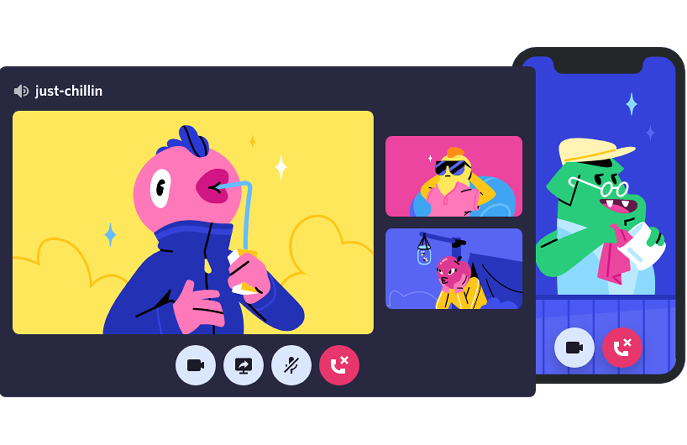

Crie um espaço controlado por convite onde você se sinta em casa
Os servidores Discord são organizados em canais com assuntos para vocês colaborarem, compartilharem ou simplesmente falarem do dia sem entupir um chat geral.
…onde você possa pertencer a um clube escolar, um grupo de gamers, ou uma comunidade artística mundial. Onde você e alguns amigos possam passar um tempo juntos. Um lugar que torna fácil conversar todos os dias e socializar com mais frequência.
Os servidores Discord são organizados em canais com assuntos para vocês colaborarem, compartilharem ou simplesmente falarem do dia sem entupir um chat geral.
Entre no canal de voz quando estiver à toa. Amigos no mesmo servidor podem te ver e entrar imediatamente, sem nem ter que fazer a chamada.
Organize qualquer comunidade com ferramentas de moderação e acesso personalizado a membros. Dê poderes especiais aos membros, monte canais privados e muito mais.
Voz e vídeo de baixa latência, para você conversar como se estivesse na mesma sala. Dê um joinha por vídeo, veja amigos transmitirem a jogatina do dia ou junte uma galera pra desenhar na tela compartilhada.
